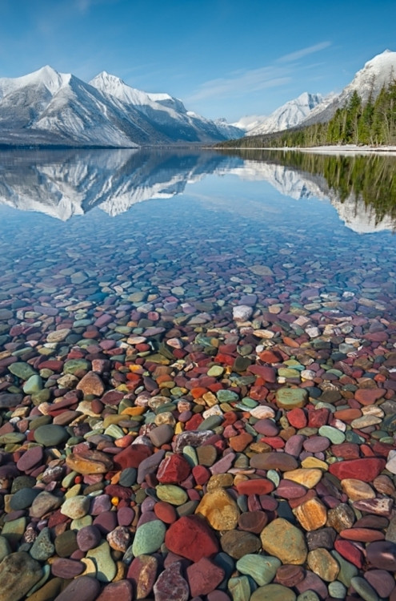

Far away in northwestern Montana, hidden from view by clustering mountain-peaks, lies an unmapped corner, the Crown of the Continent. When George Bird Grinnell first wrote those words, little did he know the impact they would have for future generations. Although it took time, and a fair amount of persistence, Grinnell along with Louis Hill, president of the Great Northern Railway, are credited as taking the necessary steps that led to President Taft signing the bill that made the area a national park in 1910. These men are only a tiny sample of the people that shaped Glacier National Park. This area's human history reaches back thousands of years and, in part through the work of the National Park Service, will continue for generations to come.
At Logan Pass, Reynolds Mountain and Clements Mountain tower over fields of wildflowers that carpet the ground throughout the summer. Waves of yellow glacier lilies pushing up through the snow are quickly replaced by a variety of alpine plants adapted to this harsh, but spectacularly beautiful habitat. Mountain goats, bighorn sheep, and the occasional grizzly bear lumbering through the meadows offer spectacular wildlife viewing opportunities.